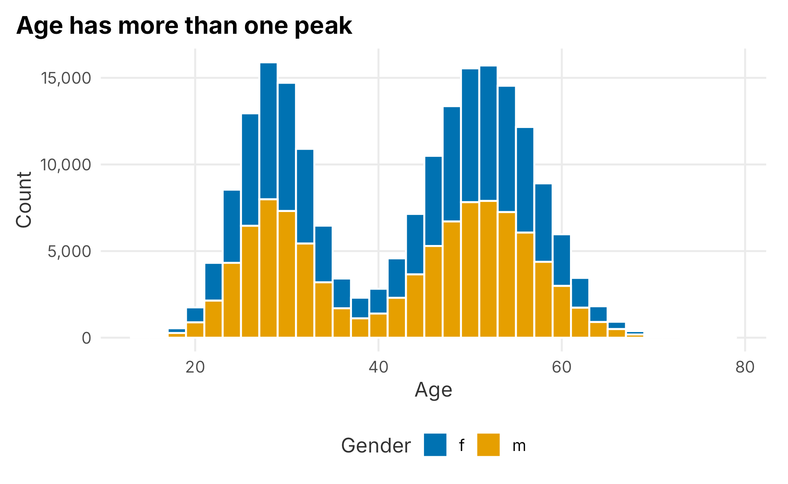
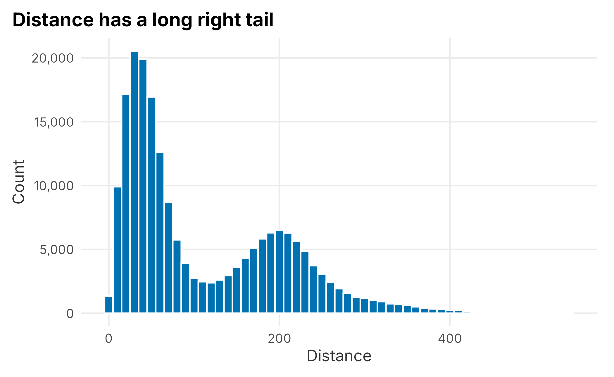
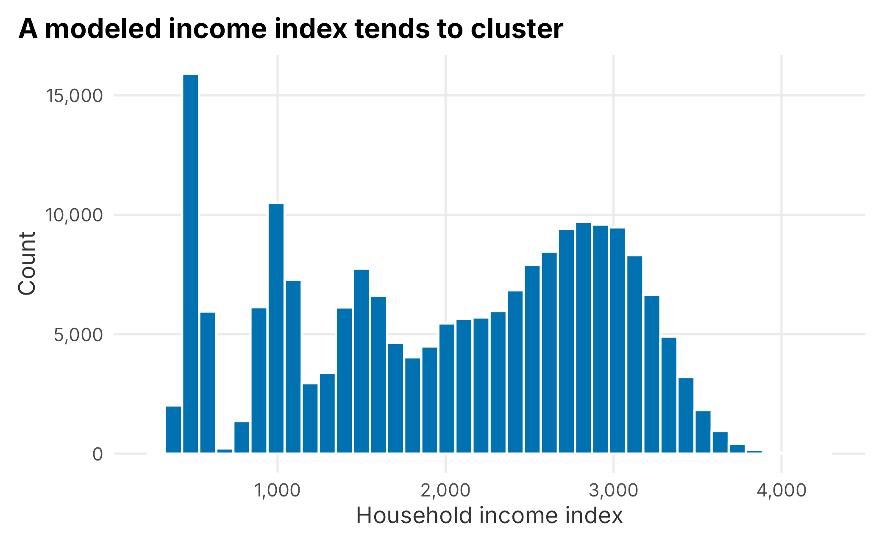
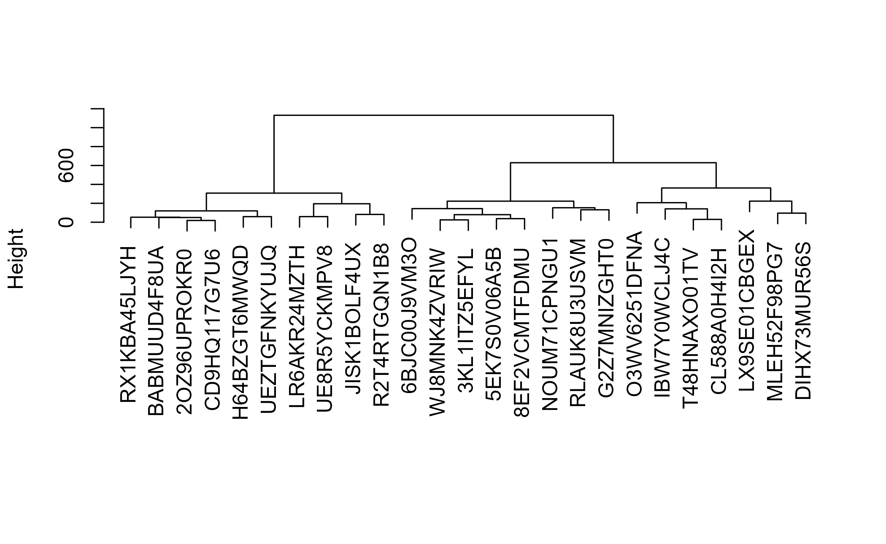
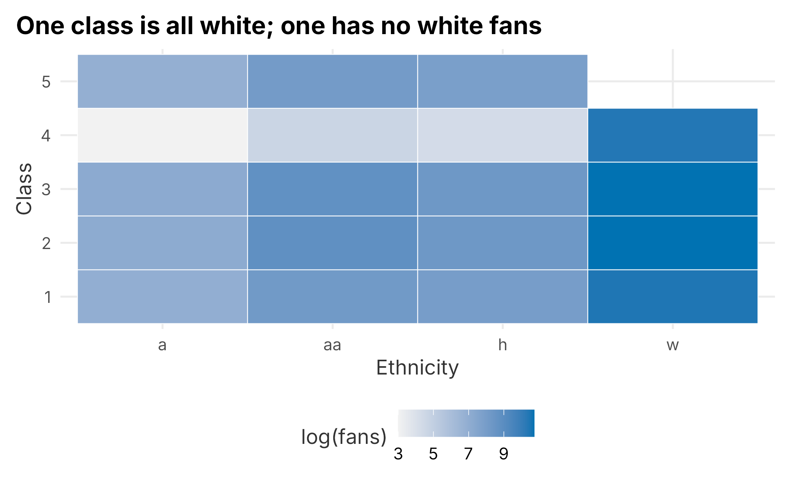
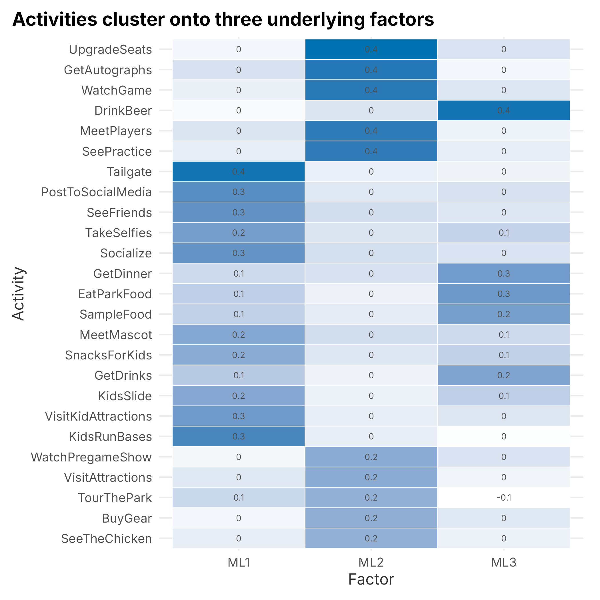
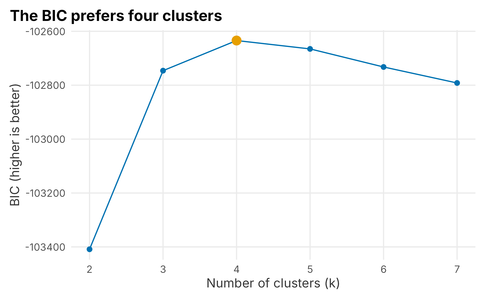
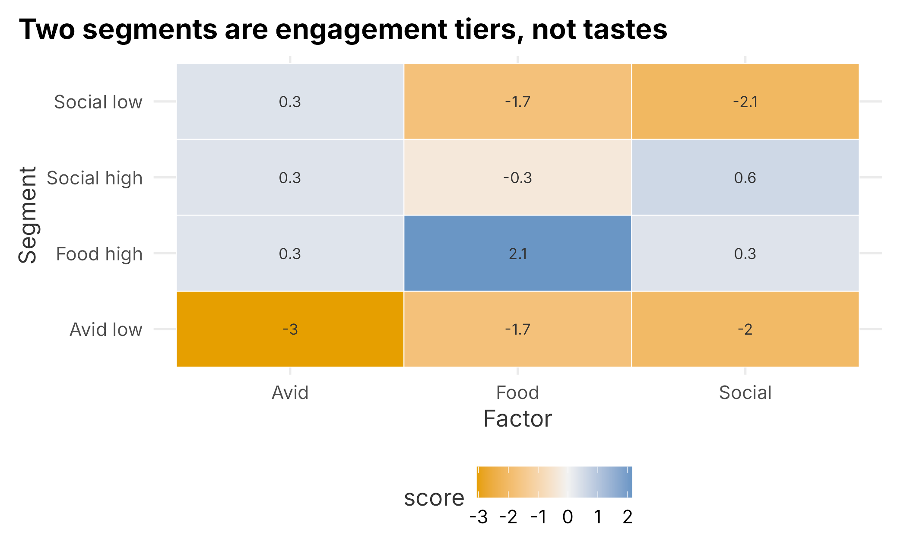
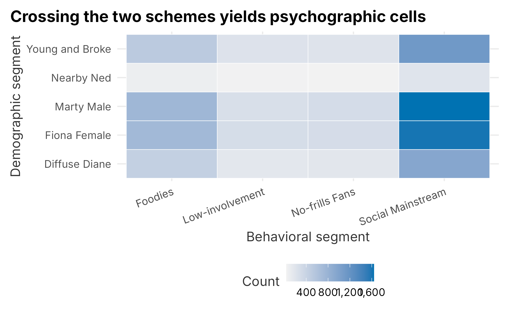
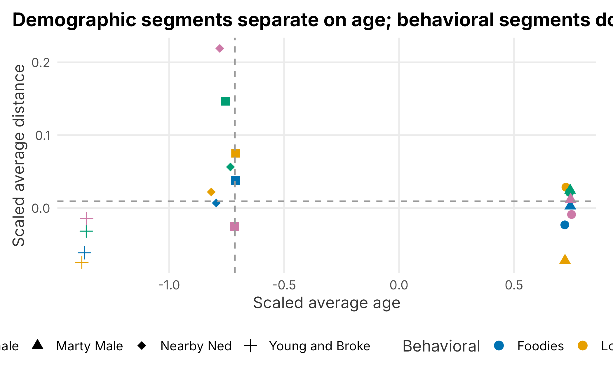

5 Segmentation
Segmenting customers well is genuinely difficult. Finding patterns in business data is easy; finding patterns you can act on is not. Many patterns only describe the structure of a market — who happens to live where, who happens to be older — rather than a difference you can exploit. On top of that, a sports club rarely has the scale or the data depth of a Facebook, a Google, or even its own league. Without partnerships, you cannot approach segmentation the way those companies do. That is the reality you work within.
This chapter has two parts:
- Preparing the data for analysis
- Analyzing and interpreting the results
It is also where the book shifts to fuller worked examples. From here on, we walk through complete analyses — the code, the output, and the interpretation — using the simulated data from Chapter 2. Before starting a project like this, ask yourself four questions:
- What am I trying to accomplish?
- How will the output be used?
- Who will use it?
- What is the incremental value of the work?
The fourth question matters most, because your time is limited. Segmentation can use many machine-learning techniques, and we will cover a few of the most useful, but none of them guarantees a result. You may find nothing, for any of several reasons: the data is bad, there is not enough of it, the technique is wrong, the problem was framed poorly, or there simply is nothing there.
A consultant always finds something — they have to. Working inside a club, you should hold a different standard:
The worst outcome of an analytics project is to believe you found something, deploy it, and be wrong.
A false segment does not just waste effort. It can actively harm the organization and erode the credibility of analytics. It is fine to come up empty. First, do no harm.
5.1 Building a segmentation scheme
Our example combines demographic data with stated preferences from a survey. The goal is a simple scheme that does a reasonable job of explaining who buys tickets and why. We group on demographics for discoverability, but what we are really hunting for is a difference in behavior. For the project to be worthwhile, four things have to hold:
- We must tell segments apart from market structure. Groups that do not differ in behavior are not useful segments.
- We must be able to reach each segment selectively, through a product or a channel.
- We must be willing to keep experimenting, because segments have to be validated over time.
- Sales and marketing leadership has to stay involved.
A segment can fail by being too broad or by being irrelevant. “People with brown eyes” is both. The aim is to find groups of fans who differ in ways that connect to how we communicate, what content they want, and how they respond to marketing. Put simply: who is our customer, and what do they want?
The analysis has two components that we will eventually overlay:
- A demographic segmentation built from third-party data.
- A set of behavioral archetypes built from survey responses.
Segmentation is never finished and is never a magic bullet. For a club the constraints are real: you do not have unlimited scale, and your samples are relatively small. You cannot run continuous experiments the way a large platform does. These projects tend to be more useful for helping marketers understand the structure of the fan base and make small, compounding improvements across campaigns. Judge success by whether the work produces testable hypotheses that let you change the behavior of a segment — better measurement of marketing return, higher conversion, or sharper product offers.
5.2 Demographic segmentation
Demographic segmentation is attractive mostly because it is discoverable: you can find these people again. It is also easy to overrate. Steve Koonin, then CEO of the Atlanta Hawks, famously dismissed the “Alpharetta unicorn”:
“The 55-year-old guy who’s going to drive an hour from Alpharetta into the city with three buddies to go to the Hawks game. He doesn’t exist. And there is no music, no kiss cam, no cheerleaders … nothing is going to change that.”
— Steve Koonin 25
Alpharetta is an affluent, less diverse, geographically isolated suburb of Atlanta. Koonin’s point was that the Hawks’ brand was not congruent with the marketing aimed at that imagined fan. Maybe the segment does not exist; maybe it just was not relevant to his situation. Either way, the lesson holds: a demographic group is only a segment if it behaves like one.
Our sample lives in the FOSBAAS package as demographic_data.
library(FOSBAAS)
demo_data <- FOSBAAS::demographic_dataThe table has 200,000 rows and 14 columns of standard demographic attributes. Latitude and longitude have already been turned into a distance metric. We will keep the columns that look useful for segmentation.
demo_data <- demo_data |>
dplyr::select(custID, ethnicity, age, maritalStatus,
children, hhIncome, distance, gender)| variable | class | first_values |
|---|---|---|
| custID | character | MBT9G0X70NTI, QTR3JJJ5J6GJ |
| ethnicity | character | w, w |
| age | numeric | 55, 30 |
| maritalStatus | character | m, s |
| children | character | y, n |
| hhIncome | numeric | 2866, 552 |
| distance | numeric | 48.34, 77.09 |
| gender | character | m, f |
We have a mix of discrete fields (ethnicity, marital status) and continuous ones (age, distance, household income). That mix matters, because it shapes how we process the data and which algorithms we can use. hhIncome is a modeled index rather than a dollar figure — a common feature of purchased data. You would need a data dictionary to know exactly what the numbers mean; here, larger is higher.
5.2.1 Exploring the demographic data
We start the same way as Chapter 3: one variable at a time. A histogram of age, split by gender, is a good first look.
ggplot(demo_data, aes(x = age, fill = gender)) +
geom_histogram(binwidth = 2, color = "white") +
scale_fill_manual("Gender", values = plot_palette) +
scale_y_continuous(labels = scales::comma) +
labs(x = "Age", y = "Count", title = "Age has more than one peak") +
book_theme
Figure 5.1: Distribution of customer age
The distribution is not a simple bell shape; it has more than one peak. That already tells us an “average age” would be misleading. Splitting by gender shows men and women are distributed almost identically, so gender is not doing much work on its own here.
Distance is the next continuous field, and it behaves very differently.
ggplot(demo_data, aes(x = distance)) +
geom_histogram(binwidth = 10, fill = plot_palette[1], color = "white") +
scale_x_continuous(labels = scales::comma) +
scale_y_continuous(labels = scales::comma) +
labs(x = "Distance", y = "Count", title = "Distance has a long right tail") +
book_theme
Figure 5.2: Distribution of distance from the ballpark
Distance is heavily right-skewed: the median is about 66 miles while the mean is over 110. When the mean sits well above the median, a long right tail is pulling it up — a handful of very distant customers. That skew can cause problems for some models, but it is useful for understanding market structure: it is simply easier for nearby people to buy and attend, and season-ticket holders tend to live closer. Be careful how you define distance, though. Distance for which customer — the buyer, each ticket, a company account?
Household income is also continuous and, being modeled, has several peaks.
ggplot(demo_data, aes(x = hhIncome)) +
geom_histogram(bins = 40, fill = plot_palette[1], color = "white") +
scale_x_continuous(labels = scales::comma) +
scale_y_continuous(labels = scales::comma) +
labs(x = "Household income index", y = "Count",
title = "A modeled income index tends to cluster") +
book_theme
Figure 5.3: Distribution of household income index
It is worth pausing here. We are looking for differences in behavior tied to a discoverable group. We do not yet have a reason to believe income changes how someone behaves as a fan. Higher income does not always mean more disposable income — people tend to spend up to their means, and a bigger house is wealth, not necessarily spending money. Hold the question loosely until the data answers it.
A single grouped summary is tidier than three separate describe calls.
| variable | mean | median | sd |
|---|---|---|---|
| age | 42.8 | 46.0 | 12.5 |
| distance | 110.1 | 66.5 | 92.1 |
| hhIncome | 2020.1 | 2153.0 | 925.7 |
As a rule, do not compute the same thing five different ways. If you can imagine a view of your data, someone has probably already solved it.
5.2.1.1 Categorical variables
For categorical fields, a proportion table shows how large each group is. Ethnicity is the clearest example.
| ethnicity | n | proportion |
|---|---|---|
| a | 4719 | 0.024 |
| aa | 20805 | 0.104 |
| h | 14265 | 0.071 |
| w | 160211 | 0.801 |
White fans make up about 80% of the sample, with the remaining 20% split across the other groups. Analyzing ethnicity is fraught. It is a loaded topic, and it is easy for an analyst to make things worse — you tend to find exactly what you expect to find. As a point estimate it may mean very little. Longitudinally it can matter: if ticket buyers cluster near the park and lean toward one group today, what happens as the area’s population changes over ten years?
A grouped summary lets us check whether the numeric attributes differ much by ethnicity.
demo_data |>
group_by(ethnicity) |>
summarise(
n = n(),
mean_age = mean(age),
mean_distance = mean(distance),
mean_income = mean(hhIncome),
.groups = "drop"
)## # A tibble: 4 × 5
## ethnicity n mean_age mean_distance mean_income
## <chr> <int> <dbl> <dbl> <dbl>
## 1 a 4719 42.2 111. 1995.
## 2 aa 20805 44.4 119. 2089.
## 3 h 14265 43.0 108. 2029.
## 4 w 160211 42.6 109. 2011.The groups are broadly similar. The largest difference is simply how many more white fans there are. Whether that is congruent with the local population is a question worth asking, but the behavioral attributes do not separate sharply on ethnicity alone. Never skip looking at each field individually — understanding the structure now saves grief later.
5.2.2 Preparing the data for modeling
You will spend more time preparing data than analyzing it. The two problems you will hit most often are missing data and sparse data. Missing data is the larger headache, and it is worth a careful look.
A small helper counts the usual culprits.
f_missing_data <- function(df) {
data.frame(
NA_count = sum(vapply(df, function(x) sum(is.na(x)), numeric(1))),
NaN_count = sum(vapply(df, function(x) sum(is.nan(x)), numeric(1))),
Inf_count = sum(vapply(df, function(x) sum(is.infinite(x)), numeric(1)))
)
}
f_missing_data(demo_data)## NA_count NaN_count Inf_count
## 1 0 0 0Nothing is missing, which is no surprise — the data is simulated. To make the example real, we will knock out about 2% of the values at random, column by column, so each field keeps its type.
set.seed(755)
demo_data <- demo_data |>
mutate(across(everything(), function(col) {
col[runif(length(col)) > 0.98] <- NA
col
}))
f_missing_data(demo_data)## NA_count NaN_count Inf_count
## 1 32211 0 0About 4,000 values are now missing in each column. Because the missing cells are spread across columns, the rows they fall in often differ, so deleting every row with any missing value would cost more than 2%.
complete_rows <- sum(complete.cases(demo_data))
data.frame(
total_rows = nrow(demo_data),
complete_rows = complete_rows,
incomplete_rows = nrow(demo_data) - complete_rows
)## total_rows complete_rows incomplete_rows
## 1 200000 169903 30097Roughly 30,000 rows have at least one missing value. Even so, the remaining ~170,000 is far more than enough to model. How do we know? There is no hard rule, but if you sampled 10,000 of these rows, each field’s distribution would look like the full data set. That is what you are really after. It holds until you reach some small number — a few hundred people — where the sample stops being representative. More data is usually better, but you pay for it in processing time.
Now we impute. The key question is always why the data is missing. If it is missing for a systematic reason — say, a long survey that people abandon — the missingness itself can bias your results. That is the technical idea behind data that is “not missing at random.” Our data is missing at random by construction, so we can be pragmatic.
We know about 80% of known ethnicity values are "w", so filling the gaps with "w" should be right about 80% of the time.
demo_data$ethnicity[is.na(demo_data$ethnicity)] <- "w"Age is multimodal, so no single value is a great fill, but with only 2% missing the cost of a simple choice is small. We will use the mean.
Using the mean is a little ironic — almost no one is exactly the average age. (This is the same problem that made it impossible to design a cockpit for the “average” pilot.) We could instead draw from the observed distribution. Either way, know what you are doing and be able to justify it.
For the categorical fields we draw from the observed proportions. About 58% of fans are married, so we sample marital status accordingly, and do the same for children and gender.
n_missing <- function(x) sum(is.na(x))
demo_data$maritalStatus[is.na(demo_data$maritalStatus)] <-
sample(c("m", "s"), n_missing(demo_data$maritalStatus), replace = TRUE, prob = c(.6, .4))
demo_data$children[is.na(demo_data$children)] <-
sample(c("n", "y"), n_missing(demo_data$children), replace = TRUE, prob = c(.52, .48))
demo_data$gender[is.na(demo_data$gender)] <-
sample(c("m", "f"), n_missing(demo_data$gender), replace = TRUE, prob = c(.5, .5))For the two remaining numeric fields, income and distance, we can let a package do the work. mice (van Buuren and Groothuis-Oudshoorn 2021) is a common choice and runs quickly on data this size. It offers more than a dozen methods; we use predictive mean matching (pmm). Read the documentation before trusting any of them — some methods suit some situations better than others.
library(mice)
imp_frame <- demo_data |> dplyr::select(hhIncome, distance)
imputed <- mice(imp_frame, m = 5, maxit = 10, method = "pmm",
seed = 755, printFlag = FALSE)
completed <- complete(imputed, 2)
demo_data$hhIncome <- completed$hhIncome
demo_data$distance <- completed$distanceFinally, where the customer ID itself is missing we just drop the row — without an ID we cannot tie the demographics back to behavior, which is the whole point.
demo_data <- na.omit(demo_data)
f_missing_data(demo_data)## NA_count NaN_count Inf_count
## 1 0 0 0No more missing values. You are not an imputation expert now, but you have the gist: it is tedious, judgment-heavy work with no single right answer. If 40% of your data were missing, you would think much harder about why before patching it. The point is to keep the goal in mind while you do it.
5.2.3 Discretizing the numeric variables
Some methods, including the latent class regression we use shortly, require discrete inputs. Turning continuous fields into categories is part art. We will do it three ways.
For age, we map birth year to a familiar generation. We anchor to a fixed reference year so the assignments are reproducible and do not drift as the calendar advances.
reference_year <- 2024
f_generation <- function(birth_year) {
if (birth_year <= 1945) "gen_Silent"
else if (birth_year <= 1964) "gen_Boomer"
else if (birth_year <= 1979) "gen_X"
else if (birth_year <= 1994) "gen_Mill"
else "gen_Y"
}
generation <- vapply(reference_year - demo_data$age, f_generation, character(1))Programmers love to criticize a chain of if/else like this; there are tidier constructs. For a readable, one-time transformation on data this size, it is fine. Storing birth year rather than age also keeps the data evergreen — worth remembering when you design a survey.
For distance, we cut on quantiles into four market rings.
dist_q <- quantile(demo_data$distance, probs = c(.25, .50, .75))
f_market <- function(d) {
if (d <= dist_q[[1]]) "dist_Primary"
else if (d <= dist_q[[2]]) "dist_Secondary"
else if (d <= dist_q[[3]]) "dist_Tertiary"
else "dist_Quaternary"
}
market_loc <- vapply(demo_data$distance, f_market, character(1))Income gets three buckets, low/medium/high, split at the quartiles. More categories mean more columns later, so keep the count modest.
inc_q <- quantile(demo_data$hhIncome, probs = c(.25, .75))
f_income <- function(v) {
if (v <= inc_q[[1]]) "income_low"
else if (v >= inc_q[[2]]) "income_high"
else "income_med"
}
income_band <- vapply(demo_data$hhIncome, f_income, character(1))We assemble these into a discrete table keyed by customer.
demo_data_discrete <- data.frame(
custID = demo_data$custID,
generation = generation,
marketLoc = market_loc,
income = income_band,
ethnicity = demo_data$ethnicity,
married = demo_data$maritalStatus,
gender = demo_data$gender
)| custID | generation | marketLoc | income | ethnicity | married | gender |
|---|---|---|---|---|---|---|
| MBT9G0X70NTI | gen_X | dist_Secondary | income_high | w | m | m |
| HOMV3XQW32LW | gen_Mill | dist_Secondary | income_med | w | s | f |
| RJ7CCATUH4Q1 | gen_Y | dist_Secondary | income_med | w | s | f |
| 9GZT5Z5AOMKV | gen_X | dist_Primary | income_med | w | m | m |
| S0Y0Y2454IU2 | gen_X | dist_Tertiary | income_high | w | m | m |
| YOZ51B6A2QMB | gen_Y | dist_Primary | income_med | h | s | m |
5.2.3.1 Dummy coding
Many models need each category expanded into its own 0/1 column. psych::dummy.code does this, and applying it column by column gives us prefixed names like generation.gen_X, which keeps otherwise-colliding levels (marital m and gender m) distinct.
dummy_list <- lapply(
demo_data_discrete[, 2:7],
function(x) psych::dummy.code(factor(x))
)
mod_data_discrete <- do.call(cbind.data.frame, dummy_list)
row.names(mod_data_discrete) <- demo_data_discrete$custID| generation.gen_X | generation.gen_Mill | generation.gen_Y | generation.gen_Boomer | generation.gen_Silent | |
|---|---|---|---|---|---|
| MBT9G0X70NTI | 1 | 0 | 0 | 0 | 0 |
| HOMV3XQW32LW | 0 | 1 | 0 | 0 | 0 |
| RJ7CCATUH4Q1 | 0 | 0 | 1 | 0 | 0 |
| 9GZT5Z5AOMKV | 1 | 0 | 0 | 0 | 0 |
| S0Y0Y2454IU2 | 1 | 0 | 0 | 0 | 0 |
| YOZ51B6A2QMB | 0 | 0 | 1 | 0 | 0 |
For methods that accept a mix of numeric and binary inputs, we also build a frame that keeps the raw numeric fields and adds the ethnicity, marital, and gender dummies. Selecting by name prefix is safer than selecting by column position.
cat_dummies <- mod_data_discrete |>
dplyr::select(starts_with(c("ethnicity.", "married.", "gender.")))
mod_data_numeric <- cbind.data.frame(
demo_data[, c("age", "distance", "hhIncome")],
cat_dummies
)
mod_data_numeric$age <- as.numeric(mod_data_numeric$age)| age | distance | hhIncome | ethnicity.w | ethnicity.aa | |
|---|---|---|---|---|---|
| MBT9G0X70NTI | 55 | 48.34 | 2866 | 1 | 0 |
| HOMV3XQW32LW | 30 | 46.72 | 2274 | 1 | 0 |
| RJ7CCATUH4Q1 | 29 | 65.45 | 1773 | 1 | 0 |
| 9GZT5Z5AOMKV | 48 | 19.28 | 1951 | 1 | 0 |
| S0Y0Y2454IU2 | 49 | 69.20 | 3244 | 1 | 0 |
| YOZ51B6A2QMB | 28 | 31.13 | 1638 | 0 | 0 |
Every column is numeric, which makes this frame consumable by a wide range of tools.
5.2.4 Hierarchical clustering
Hierarchical clustering is appealing because its results draw so nicely. The catch is that for simple inputs it often just confirms what you already know, and it scales badly: the dissimilarity matrix grows with the square of the number of rows. That is why we sample. Most “big data” problems are small data problems in disguise — here we use 25 people.
library(cluster)
set.seed(755)
hc_sample <- mod_data_numeric |> dplyr::sample_n(25)
hc_dist <- cluster::daisy(hc_sample)We cluster the dissimilarity matrix and plot the result.
hc_model <- stats::hclust(hc_dist, method = "centroid")
plot(hc_model, main = "", xlab = "", sub = "")
Figure 5.4: Hierarchical clustering dendrogram
You can see fans grouping together, but the cuts tend to fall in predictable places — a byproduct of so much categorical data. It is a useful picture, not a durable segmentation.
5.2.5 Latent class regression
Latent class regression produces more durable clusters. It works on discrete data, which is why we did all the dummy coding. The poLCA function wants its categories coded as positive integers rather than 0/1, so we recode 0 to 2. We assign into the existing frame with [] so the customer IDs in the row names survive.
mod_data_LC <- mod_data_discrete
mod_data_LC[] <- lapply(mod_data_discrete, function(x) ifelse(x == 1, 1, 2))Building the model formula by hand keeps it readable as the variable list grows.
lc_formula <- cbind(
generation.gen_X, generation.gen_Mill, generation.gen_Boomer,
generation.gen_Y, generation.gen_Silent,
marketLoc.dist_Quaternary, marketLoc.dist_Tertiary,
marketLoc.dist_Secondary, marketLoc.dist_Primary,
income.income_med, income.income_low, income.income_high,
ethnicity.w, ethnicity.aa, ethnicity.h, ethnicity.a,
married.m, married.s, gender.f, gender.m
) ~ 1We ask for five classes. There are formal methods for choosing the number, but the practical limit is interpretability: too many classes and the behaviors blur together.
library(poLCA)
set.seed(363)
seg_lcr <- poLCA::poLCA(lc_formula, data = mod_data_LC,
nclass = 5, verbose = FALSE)You can save a fitted model to reuse on new data later.
save(seg_lcr, file = "CH5_LCR_5_Model.Rdata")The classes are far from equal in size.
| class | members |
|---|---|
| 1 | 41954 |
| 2 | 57541 |
| 3 | 56972 |
| 4 | 32694 |
| 5 | 6866 |
The smallest class has under 7,000 people; the largest more than 57,000. We attach the class back to each customer and join it to the demographic table.
mod_results <- data.frame(
custID = row.names(mod_data_LC),
lcrClass = seg_lcr$predclass
)
demo_data_segments <- demo_data |>
dplyr::left_join(mod_results, by = "custID")
demo_data_segments$age <- as.numeric(demo_data_segments$age)Now we can cross-tabulate to see what actually separates the classes. Start with distance.
| lcrClass | mean_distance | median_distance |
|---|---|---|
| 1 | 109.2 | 65.8 |
| 2 | 110.5 | 66.7 |
| 3 | 110.1 | 66.3 |
| 4 | 107.9 | 64.8 |
| 5 | 118.4 | 77.7 |
Distance barely moves across the classes — they all sit around 108 to 118 miles. That is an important and slightly deflating result: even though distance went into the model, it is not what distinguishes these groups. Age is a different story.
| lcrClass | mean_age | median_age |
|---|---|---|
| 1 | 26.1 | 27 |
| 2 | 52.0 | 52 |
| 3 | 52.0 | 52 |
| 4 | 33.9 | 33 |
| 5 | 33.4 | 32 |
Age falls into three clear tiers — roughly 26, mid-30s, and 52 — and income tracks it.
| lcrClass | mean_income | median_income |
|---|---|---|
| 1 | 1315 | 1095 |
| 2 | 2430 | 2622 |
| 3 | 2406 | 2630 |
| 4 | 1608 | 1526 |
| 5 | 1582 | 1496 |
Gender is the sharpest divide of all: two classes are entirely one gender, and the other three are roughly balanced.
| lcrClass | f | m |
|---|---|---|
| 1 | 20950 | 21004 |
| 2 | 0 | 57541 |
| 3 | 56972 | 0 |
| 4 | 16491 | 16203 |
| 5 | 3434 | 3432 |
Ethnicity is more involved, so a heat map reads better than a table. We take the log of the count in the fill, which compresses the large white group enough to see the smaller ones — a handy trick whenever one category dwarfs the rest.
seg_ethnicity <- demo_data_segments |>
group_by(lcrClass) |>
count(ethnicity)
ggplot(seg_ethnicity, aes(x = ethnicity, y = factor(lcrClass), fill = log(n))) +
geom_tile(color = "white") +
scale_fill_gradient("log(fans)", low = "#f2f2f2", high = plot_palette[1]) +
labs(x = "Ethnicity", y = "Class",
title = "One class is all white; one has no white fans") +
book_theme
Figure 5.5: Ethnicity by latent class
One class is almost entirely white; another has no white fans at all; the rest split proportionally. So we now have five groups that differ on age, income, gender, and ethnicity, but hardly at all on distance. Are these segments or just market structure? We do not know yet. Do they spend differently? Respond to marketing differently? Those questions come next. A common move is to segment on measurable behavior and then look for demographic look-alikes — which is exactly what the rest of the chapter does.
5.3 A benefits-sought approach to segmentation
Behavioral segmentation groups people by what they want. A benefits-sought approach — grouping fans by what they come to the ballpark to do — gives sharp guidance on how to position an offer. The trade-off is discoverability: it is harder to find these people in a database than it is to find a 40-year-old who lives ten miles away.
We will build the behavioral scheme in three deliberate steps, each answering a different question:
- Exploratory factor analysis (EFA) — what underlying tastes does the survey measure? It compresses many stated behaviors into a few archetypes and lets the data suggest how many there are.
- Confirmatory factor analysis (CFA) — does the structure we think we found actually hold up? We write down the model explicitly and test its fit.
- A model-based mixture (GMM) — given those tastes, do fans fall into distinct groups? We cluster fans in the space of their factor scores.
This is more machinery than the demographic side, and it is worth being honest up front about why. Each step is a chance to be wrong, and the last step — turning a smooth cloud of preferences into a handful of named personas — is where analysts most often fool themselves. We will end by asking whether the personas are real enough to act on.
5.3.1 Compressing the survey with factor analysis
Factor analysis is a data-reduction technique, related to principal components analysis. We use it to compress many stated behaviors into a few underlying archetypes. The survey lives in FOSBAAS as fa_survey_data.
survey <- FOSBAAS::fa_survey_data| ReasonForAttending | Socialize | Tailgate | TakeSelfies | PostToSocialMedia |
|---|---|---|---|---|
| Special Game | 2 | 3 | 4 | 2 |
| Support the Team | 4 | 1 | 4 | 0 |
| Celebrate a birthday | 9 | 1 | 4 | 2 |
| Visit the park | 8 | 0 | 0 | 2 |
| Celebrate an anniversary | 0 | 2 | 3 | 2 |
| Company outing | 4 | 2 | 6 | 0 |
Respondents rated a list of 25 ballpark activities from 0 to 10 and gave a reason for attending. The data was not built around specific people, so we will attach customer IDs later to simulate that. First we scale the numeric columns, which matters when variables are on different ranges, and keep the result as a data frame.
survey_sc <- as.data.frame(scale(survey[, 2:26]))How many factors should we extract? A common mistake is to pick a number because it is tidy. Parallel analysis answers the question properly: it compares the structure in your data against the structure you would see in pure noise of the same size, and keeps only the factors that beat noise. The psych package (Revelle 2021) runs it.
set.seed(755)
parallel <- psych::fa.parallel(survey_sc, fm = "ml", fa = "fa", plot = FALSE)| metric | value |
|---|---|
| Suggested factors (parallel analysis) | 3 |
Parallel analysis suggests three factors. This is a useful discipline. The temptation is always to extract more — five factors feel richer than three — but the extra factors are usually noise dressed up as insight. We fit three factors with an oblique rotation (oblimin, from GPArotation (Bernaards and Jennrich 2014)), which lets the factors correlate, as real tastes do.
library(GPArotation)
survey_fa <- psych::fa(survey_sc, nfactors = 3,
rotate = "oblimin", fm = "ml", scores = "regression")To see which activities load on which factor, we reshape the loadings into long form.
loadings <- as.data.frame(unclass(survey_fa$loadings))
loadings$activity <- row.names(loadings)
loadings_long <- loadings |>
tidyr::pivot_longer(!activity, names_to = "factor", values_to = "loading")
ggplot(loadings_long,
aes(x = factor, y = reorder(activity, loading, sum), fill = loading)) +
geom_tile(color = "white") +
geom_text(aes(label = round(loading, 1)), size = 2.6, color = "grey30") +
scale_fill_gradient(low = "white", high = plot_palette[1]) +
labs(x = "Factor", y = "Activity",
title = "Activities cluster onto three underlying factors") +
book_theme +
theme(legend.position = "none")
Figure 5.6: Factor loadings by activity
Naming factors is an art, but three groupings fall out cleanly:
- Avid fans — activities centered on the game itself: watching the game, meeting players, getting autographs, upgrading seats, watching practice.
- Socializers — the social and family side: tailgating, posting to social media, taking selfies, seeing friends, and the kids’ activities.
- Foodies — eating and drinking: dinner, park food, sampling, drinks, beer.
Notice what is not here. The old temptation to force five factors invented two extra archetypes — a vague “Parkies” and a catch-all “Strangers” — that carried almost no signal. Parallel analysis spared us that. The loadings here are also modest (mostly 0.2 to 0.4), which is a warning we should keep in mind: the tastes are real but not sharp, and weak structure is exactly the kind that produces fragile segments later.
5.3.2 Confirming the structure with a CFA
The factor analysis above is exploratory: we let the data decide which activities group together. A confirmatory factor analysis turns the logic around. We write down the structure we believe — Avid, Socializer, and Foodie factors, each measured by a specific set of activities — and test how well that model reproduces the correlations in the data. It is the difference between “what patterns are in here?” and “does the pattern I claim is here actually hold?” lavaan (Rosseel et al. 2025) is the standard tool.
We assign each activity to the factor it loaded on most strongly.
avid <- c("WatchGame", "MeetPlayers", "GetAutographs", "UpgradeSeats",
"SeePractice", "WatchPregameShow", "VisitAttractions",
"BuyGear", "TourThePark", "SeeTheChicken")
social <- c("Socialize", "Tailgate", "PostToSocialMedia", "TakeSelfies",
"SeeFriends", "KidsRunBases", "VisitKidAttractions",
"MeetMascot", "SnacksForKids", "KidsSlide")
food <- c("GetDinner", "EatParkFood", "SampleFood", "GetDrinks", "DrinkBeer")
cfa_model <- paste(
paste("Avid =~", paste(avid, collapse = " + ")),
paste("Social =~", paste(social, collapse = " + ")),
paste("Food =~", paste(food, collapse = " + ")),
sep = "\n"
)The =~ operator reads “is measured by.” We fit the model with std.lv = TRUE so the factors are on a standard scale, and use the robust MLR estimator, which does not lean on the assumption that the ratings are perfectly normal.
cfa_fit <- lavaan::cfa(cfa_model, data = survey_sc,
std.lv = TRUE, estimator = "MLR")The point of a CFA is the fit indices — a handful of numbers that summarize how well the claimed structure matches the data. The usual rules of thumb are CFI and TLI above ~0.95, RMSEA below ~0.06, and SRMR below ~0.08.
| index | value |
|---|---|
| CFI | 1.000 |
| TLI | 1.001 |
| RMSEA | 0.000 |
| SRMR | 0.008 |
The fit is excellent — essentially perfect. That should make you suspicious, not happy. This survey was simulated from a clean three-factor structure, so a three-factor model recovers it almost exactly. Real survey data never fits this cleanly; you fight for a CFI of 0.93 and argue about whether to free a residual covariance or two. Treat this result as a demonstration of what CFA measures, not as a promise of how your own data will behave. What it does buy us is a defensible set of factor scores — one Avid, Social, and Food score per respondent — extracted the Bartlett way.
fa_scores <- as.data.frame(lavaan::lavPredict(cfa_fit, method = "Bartlett"))
head(round(fa_scores, 2), 3)## Avid Social Food
## 1 -1.57 -1.76 -1.65
## 2 -3.50 -2.58 0.13
## 3 -2.84 -1.51 -2.005.3.3 Model-based segments with a Gaussian mixture
We now have three continuous scores per fan. The naive next move — the one the previous edition of this chapter made — is to label each fan by whichever score is highest. That throws away most of the information: a fan who is high on everything and a fan who is barely above zero on everything both get filed under their single top score.
A better approach treats segmentation as a model. A Gaussian mixture model (GMM) assumes the fans are a blend of several overlapping clusters, each a cloud in the three-dimensional score space, and estimates both the clouds and each fan’s probability of belonging to each one. The mclust package (Fraley et al. 2025) fits it and — crucially — uses the BIC to choose how many clusters the data actually supports, rather than making us guess.
# mclust already computed the BIC for every k while fitting; reuse it.
bic_by_k <- data.frame(
k = as.integer(rownames(gmm$BIC)),
BIC = apply(gmm$BIC, 1, max, na.rm = TRUE)
)
ggplot(bic_by_k, aes(x = k, y = BIC)) +
geom_line(color = plot_palette[1]) +
geom_point(color = plot_palette[1], size = 2) +
geom_point(data = subset(bic_by_k, k == gmm$G), color = plot_palette[2], size = 4) +
labs(x = "Number of clusters (k)", y = "BIC (higher is better)",
title = "The BIC prefers four clusters") +
book_theme
Figure 5.7: BIC across candidate cluster counts
The BIC peaks at 4 clusters, so mclust settles on a 4-segment solution (model type VVI). The segments are far from equal in size.
| segment | members | percent |
|---|---|---|
| 1 | 1005 | 10.1 |
| 2 | 5520 | 55.2 |
| 3 | 969 | 9.7 |
| 4 | 2506 | 25.1 |
To interpret the segments, we profile them by their average factor score. Because mclust numbers the segments arbitrarily, we label each one by the factor it is most extreme on — a small, data-driven rule that survives a re-run.
seg_profile <- fa_scores |>
dplyr::mutate(segment = gmm$classification) |>
dplyr::group_by(segment) |>
dplyr::summarise(dplyr::across(c(Avid, Social, Food), mean),
n = dplyr::n(), .groups = "drop")
z <- scale(as.matrix(seg_profile[, c("Avid", "Social", "Food")]))
seg_profile$label <- apply(z, 1, function(r) {
f <- c("Avid", "Social", "Food")[which.max(abs(r))]
paste(f, if (r[which.max(abs(r))] >= 0) "high" else "low")
})
seg_profile |>
tidyr::pivot_longer(c(Avid, Social, Food),
names_to = "factor", values_to = "score") |>
ggplot(aes(x = factor, y = label, fill = score)) +
geom_tile(color = "white") +
geom_text(aes(label = round(score, 1)), size = 3, color = "grey20") +
scale_fill_gradient2(low = plot_palette[2], mid = "#f2f2f2",
high = plot_palette[1], midpoint = 0) +
labs(x = "Factor", y = "Segment",
title = "Two segments are engagement tiers, not tastes") +
book_theme
Figure 5.8: Behavioral segments by mean factor score
The profile is revealing, and a little deflating. Only two of the four segments look like the tastes we set out to find: a large Social-leaning mainstream (about 55% of fans) and a distinct Foodie group (about 25%) that scores far above everyone on food. The other two segments are essentially engagement tiers — one group that is low on the social and food factors, and one that is low on everything. The mixture did not carve the fan base into Avid-versus-Social-versus-Foodie; it mostly sorted fans by how much they want to do, not what. That is the difference between market structure and a behavioral segment, showing up in the output.
5.3.4 Are the segments real enough to act on?
Before we name these groups and hand them to marketing, we owe the organization two checks. This is the “first, do no harm” standard from the start of the chapter, made concrete.
First, how confident is each assignment? A GMM gives every fan a probability of belonging to each segment, so we can look at how crisp the assignments are.
max_posterior <- apply(gmm$z, 1, max)
data.frame(
avg_confidence = round(mean(max_posterior), 3),
share_below_80 = round(mean(max_posterior < 0.80), 3)
)## avg_confidence share_below_80
## 1 0.774 0.543More than half of fans have a top-segment probability below 0.80. In other words, the crisp four-box picture is an overstatement: a large share of fans sit in the fuzzy overlap between segments and could be assigned either way. Any profile that reports hard-segment averages as if every member truly belonged is quietly inflating the differences.
Second, would we get the same segments again? We resample the fans with replacement, refit the mixture, and measure how well the new segment labels agree with the original using the Adjusted Rand Index (ARI), where 1 is perfect agreement and 0 is chance. A dozen resamples is plenty to see the pattern and keeps the render quick.
set.seed(99)
base_class <- gmm$classification
ari <- replicate(12, {
idx <- sample(nrow(fa_scores), replace = TRUE)
fit <- mclust::Mclust(fa_scores[idx, ], G = gmm$G,
modelNames = gmm$modelName, verbose = FALSE)
pred <- predict(fit, fa_scores)$classification
mclust::adjustedRandIndex(pred, base_class)
})
data.frame(mean_ari = round(mean(ari), 2),
min_ari = round(min(ari), 2),
max_ari = round(max(ari), 2))## mean_ari min_ari max_ari
## 1 0.4 0.27 0.52The average ARI lands around 0.4 — moderate, not strong. The segments are not random noise, but they are not rock-solid either; resample the survey and the boundaries move.
Put the two findings together and you have a governance decision, not just a statistical one. Serious segmentation programs write down acceptance gates in advance — a segment scheme is only approved for activation if, say, every segment clears a minimum size, assignments are confident enough, and the scheme reproduces on resampled data. Judged against gates like those, this hard four-persona scheme is shaky: two “segments” are engagement tiers rather than tastes, over half of assignments are low-confidence, and stability is only moderate.
The constructive response is not to abandon the work — it is to activate on the continuous factor scores rather than the hard personas. The three Avid/Social/Food scores predict how a fan will behave more reliably than a box labeled “Segment 3,” because they keep the very information the hard assignment throws away. The named personas still earn their keep as a communication layer — it is far easier to brief a marketing team on “Foodies” than on a vector of factor scores — but the targeting logic underneath should run on the scores. Naming a segment is cheap; being able to reach it, and being right about it, is not.
5.3.5 Casting behavioral segments onto demographics
The behavioral scheme has one unavoidable weakness: you can only assign it to people who took the survey. A natural question is whether demographics could predict someone’s behavioral segment, extending the scheme to fans who never answered. Our survey was not tied to real customers, so we simulate the link by attaching each respondent to a random customer from the demographic segmentation — enough to show the mechanics, honest about the fact that any relationship we see is manufactured.
set.seed(755)
fa_scores$behavior_raw <- factor(gmm$classification)
fa_scores$custID <- sample(demo_data_segments$custID, nrow(fa_scores))
combined <- demo_data_segments |>
dplyr::left_join(fa_scores, by = "custID") |>
na.omit()We give both schemes readable names. The behavioral names come from the segment profiles above; the demographic names summarize what we learned from the cross-tabs — the low-income youngsters, the single-gender older groups, and so on.
beh_names <- setNames(
ifelse(seg_profile$label == "Social high", "Social Mainstream",
ifelse(seg_profile$label == "Food high", "Foodies",
ifelse(seg_profile$label == "Social low", "No-frills Fans", "Low-involvement"))),
seg_profile$segment
)
combined$behavior_segment <- beh_names[as.character(combined$behavior_raw)]
combined$demo_segment <- dplyr::recode(as.character(combined$lcrClass),
"1" = "Young and Broke", "2" = "Marty Male", "3" = "Fiona Female",
"4" = "Diffuse Diane", "5" = "Nearby Ned")5.4 Psychographic segmentation
Psychographic schemes are the abstract, alliteratively named profiles you see everywhere — “Jets-fan Jeff,” “Tailgating Tina.” They combine behavioral and demographic schemes. We can build a simple version by crossing our two segmentations.
segment_grid <- combined |>
group_by(behavior_segment, demo_segment) |>
summarise(n = n(), .groups = "drop")
ggplot(segment_grid, aes(x = behavior_segment, y = demo_segment, fill = n)) +
geom_tile(color = "white") +
scale_fill_gradient("Count", low = "#f2f2f2", high = plot_palette[1],
labels = scales::comma) +
labs(x = "Behavioral segment", y = "Demographic segment",
title = "Crossing the two schemes yields psychographic cells") +
book_theme +
theme(axis.text.x = element_text(angle = 20, hjust = 1))
Figure 5.9: Behavioral segment by demographic segment
Every behavioral segment appears inside every demographic segment, which is the tell-tale sign that, in this contrived data, the two schemes are independent. To see it numerically, scale age and distance and average them within each cell.
combined$age_s <- as.numeric(scale(as.numeric(combined$age)))
combined$distance_s <- as.numeric(scale(as.numeric(combined$distance)))
segment_profile <- combined |>
group_by(behavior_segment, demo_segment) |>
summarise(age = mean(age_s), distance = mean(distance_s), .groups = "drop")
ggplot(segment_profile,
aes(x = age, y = distance, color = behavior_segment, shape = demo_segment)) +
geom_point(size = 3) +
scale_color_manual("Behavioral", values = plot_palette) +
scale_shape_manual("Demographic", values = c(15, 16, 17, 18, 3)) +
geom_hline(yintercept = median(segment_profile$distance), linetype = 2, color = "grey60") +
geom_vline(xintercept = median(segment_profile$age), linetype = 2, color = "grey60") +
labs(x = "Scaled average age", y = "Scaled average distance",
title = "Demographic segments separate on age; behavioral segments do not") +
book_theme
Figure 5.10: Segments by scaled age and distance
The picture is clear once you know what to look for. The points separate left-to-right by demographic segment (the shapes) and barely at all by behavioral segment (the colors). The single-gender groups, Marty Male and Fiona Female, index oldest; Young and Broke is youngest; and Nearby Ned, despite the name, sits furthest from the park. The behavioral archetypes carry no age or distance signal here — exactly what we would expect, since they were layered on at random. With real survey data tied to real customers, this is where genuine psychographic profiles would start to emerge.
We are, once again, only getting started. A full analysis would be more exhausting but no more complicated — the same steps, repeated. The point of the example is how much careful, tedious work sits between raw data and a usable segment.
5.5 Other segmentation methods
There are hundreds of ways to segment data. As a rule, start with the simplest scheme that could work — even a single rule, like men versus women — and add complexity only when it earns its keep. Other common tools include:
- K-means clustering
- K-nearest neighbors
- Expectation maximization
- Simple rule-based schemes
No single approach is best. In The Signal and the Noise, Nate Silver contrasts the hedgehog, who knows one big thing, with the fox, who knows many small things (Silver 2012). For this kind of work, be the fox: combine practical knowledge with an analytical process. A purely numerical approach rarely gives the best answer.
5.6 Key concepts and chapter summary
Segmentation is part art, part science, and mostly patience. We worked through a fairly complete example and hit the high points:
- Exploring and preparing data for a demographic segmentation, including missing-data imputation
- A hierarchical clustering approach and a latent class regression on demographics
- A benefits-sought approach built as a three-step measurement pipeline: exploratory factor analysis, a confirmatory factor analysis, and a Gaussian mixture model
- Checking whether the resulting segments are stable and confident enough to act on
- Combining the schemes into psychographic profiles
A few lessons are worth keeping:
- The goal is to find exploitable differences, not just market structure. Groups that differ only in how much they engage — the engagement tiers our mixture surfaced — are market structure, not segments.
- Demographic segmentation is the easiest place to start and often the least useful. It is discoverable, which is its main virtue.
- Preparing the data — especially handling missing values — will take most of your time and bears heavily on the result. There is rarely one right method; document your judgment calls.
- Let the data choose the number of factors and clusters. Parallel analysis and the BIC guard against the ever-present temptation to extract more structure than the data supports.
- Exploratory and confirmatory factor analysis answer different questions. EFA finds the structure; CFA tests a structure you specify. Good CFA fit on real data is hard-won — be suspicious when it comes easily.
- A model-based mixture beats labeling fans by their single top score, because it keeps the probability that a fan belongs to each group. Most fans are not crisply one thing.
- Validate before you deploy. Check segment sizes, assignment confidence, and stability against resampling. When hard personas are fragile — as ours were — activate on the continuous factor scores and keep the personas as a communication layer.
Above all, hold the standard we started with: it is fine to find nothing, and far better than deploying a segment that is not real. Chapter 6 turns to pricing and forecasting, where the cost of a confident wrong answer shows up directly on the revenue line.